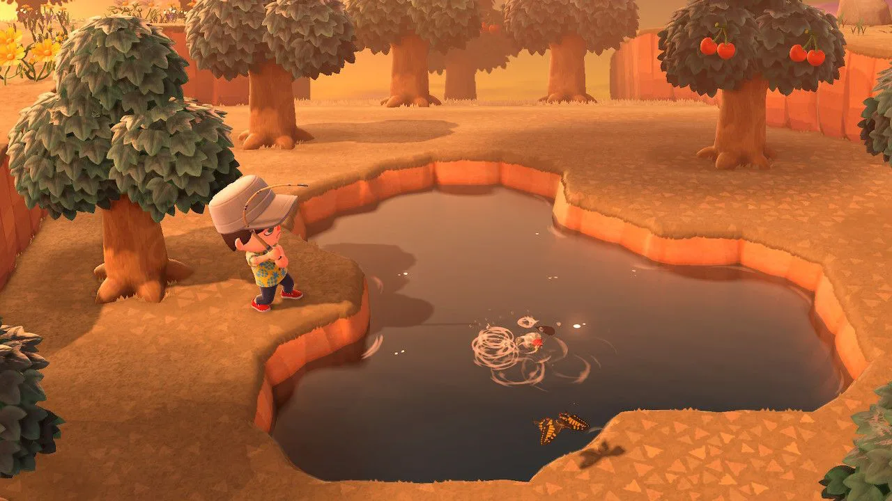
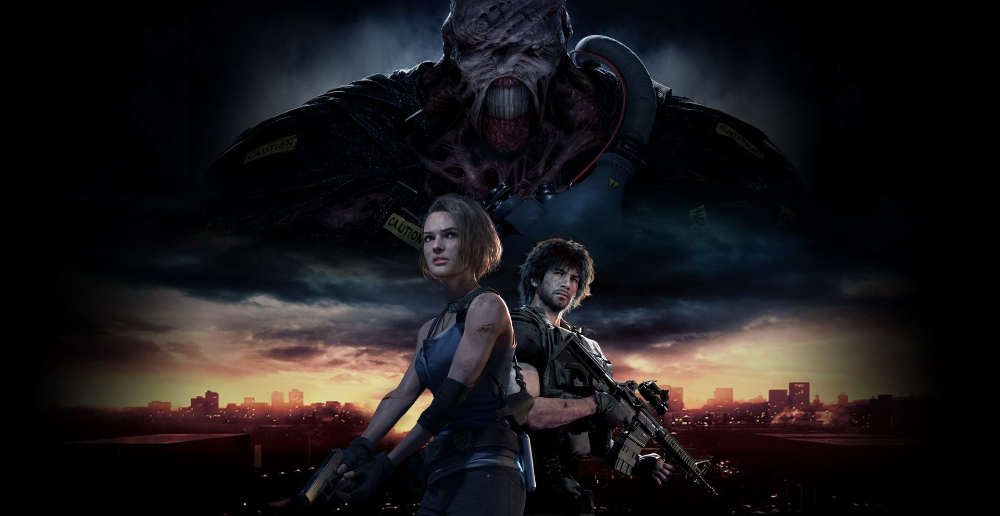

Seriály a Hry
V tejto rubrike vám odporučíme nejaké hry a seriály, ktorými sa môžete zabaviť počas karantény, ale aj vo svojom všeobecnom voľnom čase.
Seriály
Tiger King
Ide o dokumentárnu tragikomédiálnu minisériu, s prvkami reality show, o chovaní veľkých mačkovitých šeliem v USA. Ide o bizarnú jazdu 8 epizód dlhou sériou, na ktorú tak skoro nezabudnete. Hodnotenie: 84 %
I´m not okay with this

Seriál z marca tohto roka je inšpirovaný komiksom Charlesa S. Forsmana. Ide o príbeh 17-ročnej Sydney Novak (Sophia Lillis), obdarenej výnimočnými schopnosťami, ktorá sa stretáva s problémami nie celkom bežného teenagera. Krátka séria je zakončená clifhangerom, ktorý aj nie veľkým fanúšikom tejto série nedá spať. Seriál sa dá pozrieť ani nie za 3 a pol hodiny, takže ak aj nemáte cez karanténu veľa času, tak táto krátka teenegerská komédia je ako pre vás. Hodnotenie: 95%
Bojack Horseman
Tohto roku sa dočkal pokračovania jeden z najlepších a najfilozofických animovaných seriálov. Príbeh herca - koňa zo sitkomu z 90-tych rokov. Tento seriál priniesol od roku 2014 veľa humoru a filozofie do mnoho životov. Hodnotenie: 91 %
Defending Jacob
Pre tých, čo majú radi drámu a krimi vyšli tento týždeň prvé tri epizódy tohto seriálu. Tvorcovia sa zahrávajú s psychikou diváka a dokážu vás vtiahnuť do deja. Sami budete zmätení, komu v seriáli veriť. Zahrali si tam aj hviezdy ako Chris Evans, Jaeden Martell alebo J.K. Simmons. Aj napriek faktu, že zatiaľ sú vonku iba prvé tri epizódy, tak sa rozhodne máme všetci na čo tešiť. Hodnotenie: -
Hry
Animal Crossing: New Horizon

Animal Crossing: New Horizon je úžasná simulácia života. Váš avatar má za úlohu postarať sa o váš ostrov a jeho ekosystém. Séria je tu už s nami 20 rokov a aj napriek tejto dobe nová časť Animal Crossing nabehla na prvé priečky rebríčkov ako blesk. Pokojné soundtracky, ktoré sa menia podľa reálnych hodín, kedy to hráte, dodávajú harmonickú atmosféru. Verzia na Nintendo Switch dokonca predbehla v predaji aj najnovšiu Pokémon hru Pokémon Sword & Shield. Hra prináša aj multiplayer mód a donúti vás sa každý deň vrátiť na ostrov a postarať sa oň.
Resident Evil 3 Remake

Nervy drásajúci zombie apokaliptický remake Resident Evil 3 vás rovno hodí do nepokojného a vírusom napadnutého Raccoon City. V roli Jill Valentine alebo Carlosa Olivieru je vašou úlohou nájsť vakcínu proti šíriacemu sa vírusu, prežiť a zbaviť sa všemocného mutanta Nemesis, ktorý sa stal symbolom série. V hre sú aj hlavolamy, ktoré vás veľmi nepotrápia. Hra sa dá zakúpiť pre PC, na Xbox One a aj Playstation 4. PC demo verzia je stále zadarmo na Steame.
Doom Eternal
4 roky očakávané pokračovanie tejto svetoznámej série. Ide o strieľačku z pohľadu 1. osoby a napínavá atmosféra sa dá krájať. Okolo 60% ľudskej populácie je mŕtva a zvyšok ľudstva je pod inváziou dobre vedených pekelných tvorov. Narozdiel od minulých dielov má tento nový projekt hlbší príbeh, ktorý sa zapáčil aj starším fanúšikom série. Hra vyšla na PC, Xbox One a Playstation 4. Celý diel sa odohráva 8 mesiacov po udalostiach v Doom 3. Hra zaujme aj nováčikov, ktorí sa o túto sériu doteraz nezaujímali.
Kategórie:
Hry